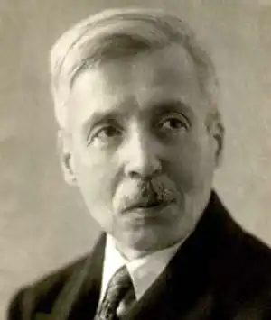

ІВАН КОЧЕРГА
(1881 — 1952)
Народився Іван Антонович Кочерга 6 жовтня 1881р. в містечку Носівка на Чернігівщині в сім'ї залізничного службовця, що зумовляло часті переїзди. Лише 1891p. їхня родина оселяється на постійне проживання в Чернігові, де 1899р. він закінчує гімназію. Відтак їде до Києва і вивчає право на юридичному факультеті. По закінченні університетських студій в 1903р. повертається до Чернігова і стає на службу чиновником у контрольній палаті. З 1904р виступає з театральними рецензіями на сторінках чернігівських газет. 1910р. пише першу п'єсу (російською мовою) "Пісня в келиху" (вперше поставлена в Харківському Народному театрі лише 1926р. в перекладі П. Тичини під назвою "Легенда про пісню", п'єса успіху не мала). Нова п'єса — "Дівчина з мишкою" (рос. мовою, 1913) мала помітний, хоч і скандальний успіх. 1914р. І. Кочерга переїхав в Житомир. П'єси російською мовою "Зубний біль сатани" (1922) та "Викуп (Весільна поїздка Марусі)" (1924) завершують певний етап драматургічного розвитку, в цей період творчого життя письменник починає писати українською мовою. 1925p. він завершує роботу над п'єсою "Фея гіркого мигдалю". 1927р. — пише нову п'єсу "Алмазне жорно". 1928р. — кілька п'єс, безпосередньо пов'язаних тематикою і проблематикою з тогочасною дійсністю. В цей період І. Кочерга з посади ревізора житомирської робсельінспекції переходить працювати літредактором у міську газету "Робітник", а згодом — у "Радянську Волинь". Він пише комедію "Натура і культура" (1928), драму-феєрію "Марко в пеклі" (1928) і низку так званих "кооперативних" п'єс, типових для 20-х років агіток. Вистава "Марко в пеклі" у харківському Червонозаводському театрі (режисер В. Василько) мала успіх, але до самої п'єси рецензенти поставилися стримано. В 1929p. в Житомирі відбулися гастролі Другої державної української опери Правобережжя (липень-серпень), театру української Музкомедії і драми під керівництвом Д. Гайдамаки (жовтень-листопад) та інших колективів і окремих виконавців. І. Кочерга, який в попередні роки лише зрідка виступав у пресі, активізує свою критичну діяльність. З 14 липня по 9 серпня 1929p. він друкує в газеті "Робітник" 11 лаконічних, але глибокозмістовних рецензій на вистави театру української опери — це чи не більше, ніж за всі 1922 — 1928 pp. Він пише чимало п'єс: драматична поема "Свіччине весілля" (1930; інша назва "Пісня про Свічку"), водевіль "Ліза чекає погоди..." (виданий 1931р.), п'єса "Майстри часу" (інша назва "Годинникар і курка", 1933). Драматична поема "Свіччине весілля" була поставлена лише 1935р. в Запоріжжі й тільки після цього почала тріумфальний хід по сценах десятків театрів. П'єса "Майстри часу", незважаючи на те, що спочатку була відхилена українським реперткомом, на Всесоюзному конкурсі драматургічних творів у 1934p. дістала (під назвою "Годинникар і курка") третю премію. 1934р. І. Кочерга переїздить до Києва, де поринає в активну громадську, критико-публіцистичну та творчу роботу. Продовжує художню розробку проблемних філософських питань, працює і над кіносценаріями, перекладами. З початку Великої Вітчизняної війни живе в Уфі, де редагує газету "Література і мистецтво" й працює в Інституті літератури АН УРСР. У цей період створює кілька невеличких п'єс, які, часом дотепні, по-своєму правдиві, не стали, однак, досягненнями автора. Дещо пізніше написані твори "Чаша", 1942; "Досить простягти руку", 1946. В одноактівці "Зубний біль сатани" реалізований задум п'єси, який автор нотував ще в 10-х роках. Повернувшись 1944р. до Києва, І. Кочерга пише романтичну драму "Ярослав Мудрий" (1944, друга редакція — 1946). Драма задумана як історична трагедія, але деяка ідеалізація самого образу князя не дозволила автору домогтися по-справжньому трагедійного звучання твору. Як романтична ж драма "Ярослав Мудрий" є високим досягненням в українській літературі. У повоєнні роки основні творчі сили письменник віддає роботі над драматичною поемою про Т. Г. Шевченка "Пророк" (1948). Помер Іван Антонович Кочерга 29 грудня 1952р. Виявивши свій талант як майстер гострого сюжету, в розвитку якого окреслювалася певна значуща авторська ідея, драматург створив видатну філософську драму — п'єсу "Майстри часу". Історичними драмами "Свіччине весілля", "Алмазне жорно" та "Ярослав Мудрий" він не тільки говорив про славне, хоч і складне, нерідко — тяжке минуле нашого народу, але й був суголосним своїми думками та ідеями змаганням і потребам сучасного йому дня.